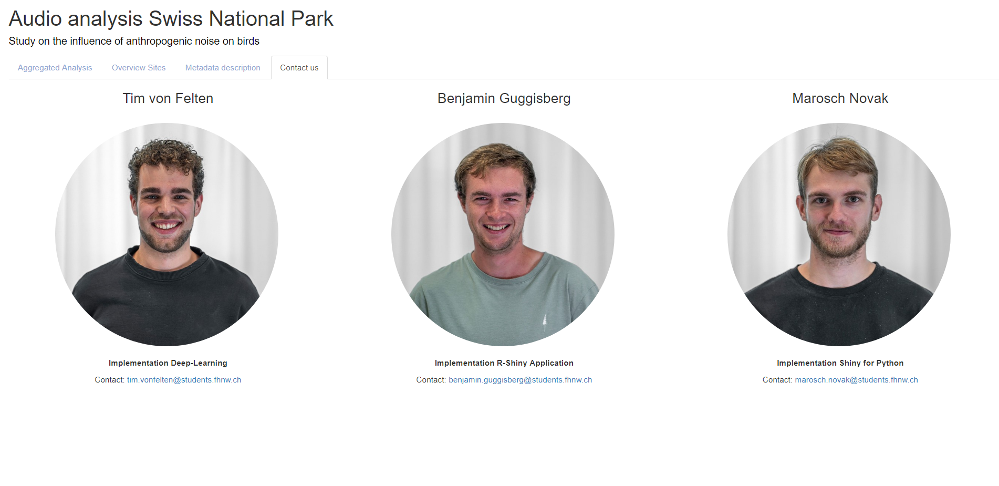

This is an application for the visualization and analysis of collected sound data (.WAV files) from the Swiss National Park along the Ofenpass road. The aim of this study is to try to identify dependencies and patterns between the song activity of songbirds and anthropogenic noise. The technical implementation of the data classification was carried out using a deep learning model from Seth Adams. R-Shiny was then applied to visualize this classified data to provide a user-friendly analysis tool for further studies.
Check out Soundy on GitHub here !
Check out Soundy Shiny here !
In the aggregated analysis view, you can calculate and visualize the average value of the 4
classified categories bird, traffic noise, nature and silence for a time period of your choice
(if data is available). The classification was performed using a deep learning model. The
aggregated visualization allows conclusions and studies about the influence of traffic noise on
the activities of songbirds in the Swiss National Park.
The percentages of the classes are also displayed as glyphs at the device location for each
15-minute interval over the averaged 24 hours of your choice.
Check out our app demo!
In the Overview tab, you can display the glyphs for any selection of locations and the time
window of your choice. As in the aggregated analysis, the data is averaged here for any time
period.
Check out the demo here!
The Metadata tab lists all information on the input parameters, a brief model description and pending or upcoming updates.
Last but not least, our contact details are listed here. If you have any questions, please contact the person responsible directly.
